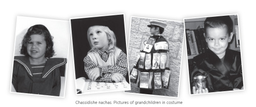

The Jewish Spark That Found Its Way Home
“The war made me think about death and what would happen if my life stopped at this point. It occurred to me that I wanted to die as a Jew and maybe this is what propelled me to convert.” * This is the story of a Gentile girl growing up in Germany who discovered she had a Jewish grandparent. * Hear

ASTOUNDING DISCOVERY
“I was born in a small German city to a Protestant family. I had a good childhood, good parents and a good family. Without knowing why, I felt close to G-d. I was drawn to recite Psalms and I loved anything spiritual. I was in the church choir, attended Bible class and taught children.
“My mother was a woman of faith and good character, with a positive outlook about everyone and everything. She raised us at home until we were of school age and then we received an excellent education. My father was involved in writing and publishing as the chief editor of one of the departments at the local newspaper. He loved doing kind deeds and often hired foreign workers in order to help them. He was a special man with a very restless soul. He traveled a lot, going to India and Egypt, and he died suddenly at age 70.
“‘I was a shy and very introverted child. From a young age I felt different than others. I drew, wrote, played music, sang, and was involved in many social groups, and yet, I felt alone. My home wasn’t religious at all and my four sisters and brother were not drawn to religion as I was.
“When I was five, we discovered that my paternal grandmother was Jewish. It seemed that my father himself did not know that he was Jewish until he grew up. His mother had converted and assimilated along with her thirteen brothers and sisters and denied her Jewishness. This was common in Germany. My father lived through the Holocaust in a state of great frustration, since he had to deny his Jewishness and live without any Jewish identity. He did not want us to suffer as he did and so he did not tell us about his roots. But as young as I was, I was thrilled with the astonishing news.
“My Jewish grandmother died at the age of 95 in the peak of health. It’s interesting that I, of all the grandchildren, had a different relationship with her and it wasn’t positive. She was very critical of me. She considered me the black sheep and she caused me much suffering. At the same time, it’s extraordinary that upon my birth, she demanded that I be given a Jewish name, unlike the other children. I assume it came from a subconscious inner conflict she had about Judaism.
“My father was her only son among four daughters. He did not like to talk about his past. With wisdom and humor he tried hiding his roots. But I, with curiosity and persistence, managed to get some information from my aunts and grandmother (who were all blonde and of Aryan appearance) who had hidden in Denmark during the war.”
CANDLE IN THE CEMETERY
“In my youth I felt an enormous need to dig into my roots, and driven by some inexplicable curiosity, I began researching what a Jew is. I did not include my parents in my search because I did not feel an inner bond with them. I told only one sister of mine. I looked in encyclopedias and avidly read any scrap of information about the Jewish people. What I discovered just spurred me on to find out more.
“I went to Frankfurt where I systematically looked through the telephone book for Jewish names, any shred of information that could guide me in my search of my roots. I found names and addresses of Jewish hospitals, cemeteries, and old age homes and began walking, due to lack of funds, to every location with a Jewish name.
“One Erev Shabbos, I arrived at a Jewish synagogue just as they were davening Kabbalas Shabbos. That inner urge compelled me to overcome my shyness and walk in. I did not want to stand out, but the men immediately noticed me and motioned to me to go to the women’s section. I stood there hypnotized. I copied what they did: when they sat, I sat and when they stood, I stood. I was moved to the depths of my soul as though I was in paradise. I couldn’t restrain myself. I danced and sang. For the first time in my life I was inexplicably happy. I’ll just mention here that I visited the same place two years ago and everything was just as it was then.
“That first wonderful Shabbos led to additional Shabbasos, which were important steps in my journey. I continued to go to shul on Shabbos and to church on Sundays. Everything having to do with Judaism excited me. I was drawn to anything with Hebrew letters. I lived a double life with a Bible in my bag all the time, which I read whenever I had a free moment. I had many questions. I asked them and received answers.
“At that time, I did not think of becoming Jewish. It was a spontaneous search that was driven directly by my subconscious. One time, I was looking out the window of a bus and saw a sign for the Jewish cemetery. I couldn’t wait to go there. For some reason, I had the idea of lighting a candle there. At the first opportunity I got on my bicycle and rode over and lit a candle, but then I immediately left so people wouldn’t think I was crazy.
“I began writing in a journal, maybe influenced by the diary of Anne Frank whom we all admired. Writing helped me develop. I wrote all kinds of thoughts, for example, what does G-d want of me. I spoke to Him freely.”
ALONE ON THE DECK
“At 17 I began studying early childhood education in a seminary run by nuns. Although I tried hiding my interest in Judaism, I wasn’t too successful because it came up constantly. If we were doing crafts, I used Jewish motifs. Jewish symbols also came up in my drawings. Judaism appeared in my work like a point of light above Christianity which drew from it, and the image in black was me.
“The seminary was Catholic but free of religious requirements, and I was able to be excused from religion classes. I enjoyed the school and had good friends and good teachers. I always loved children and enjoyed working with them. After getting my teaching certificate, I got a job at a preschool in Paris. At nap time, I loved playing my guitar and singing to the children. I stood out in my work and got to know everybody, but unfortunately, I also discovered the dark side of people, the jealousy and the lack of being happy for others. The principal of the school was a hypocrite and everyone was afraid of her, including her husband and the neighbors. She was sweet and smiled at everyone, but she spoke about them behind their backs. I had a hard time getting along with her and she began badmouthing me behind my back too.
“One day, she called me to her office for a talk. I was afraid. I didn’t know how to stand up to her. I went to the beach that night, alone, barefoot on the sand, and cried to G-d to help me. Then suddenly, I can’t explain it, I heard a voice which said, ‘What’s the problem? Leave it all and go to Israel.’
“To me, Israel was only a concept, but the answer that burst forth from my soul liberated me. I went back to the dormitory happily and when I went to see her the following morning, I told her that I wanted to go to Israel. She said, ‘Oh, if that’s why you’re acting this way, I’ll give you an additional position.’ And things changed for the better. She gave me a bonus and I got the address of the Jewish Agency from her. I kept that paper in my wallet like a talisman.
“I felt I should go to Israel immediately. I decided to go to a kibbutz. I planned well for the next stage of my life. I tried to learn Hebrew and read up on Israel, especially about kibbutzim. I wrote to my parents, telling them I had to go to Israel. I asked them to arrange my paperwork at the Interior Ministry. They were opposed to my decision. Why should an 18 year old girl travel alone to a dangerous place, to the Middle East? They were unwilling to support me in this decision and so I looked for the cheapest way to get to Israel. I found a round trip boat ticket with a three month visa and I told my father about it. He actually went to the Jewish Agency and tried to cancel my ticket, but they told him that Israel is like Europe; it wasn’t Egypt. There was nothing to be afraid about. My father did not forbid me to go; he just kept quiet.
“Before leaving, I went to a Reform youth home in Frankfurt to attend a Seder. The principal, an Israeli named Uri, let me join together with my sister. I asked him to teach me a little Alef-Beis and he agreed, on condition that I help him out. ‘I have a radio and speakers. Do me a favor. They won’t check you. Take this to my sister in Israel.’ We made a deal: I would take the radio and he would teach me a little Hebrew.
“I boarded the ship with my little suitcase and the radio, without an address. I relied on G-d that all would be well. As we approached the port of Haifa, a storm kicked up. The ship could not anchor and was awash with sea water. Everybody fled below but I stayed alone on deck and was happy.
“We finally arrived in Haifa. Where should I go? All I had was the address for where to deliver the radio, Uri’s sister’s house in Cholon. I was warmly welcomed. She spoke a little German and I stayed with them for two weeks. They did everything for me and arranged a place for me to stay at Kibbutz Ashdot Yaakov. I left them feeling tremendously grateful and traveled to the kibbutz. I was sure I would find the answers to all my questions about Judaism, but when I arrived I found that the kibbutz wasn’t at all religious. So I went to a nearby kibbutz for Shabbos where there was a synagogue for elderly men. I prayed with a kerchief because all the old ladies wore kerchiefs.
“They told me at the kibbutz that there is a family who knows everything about Judaism because they were religious in Russia. I went to them and felt I had come home. The husband and wife guided me, answered all my questions and taught me Shabbos songs. In the local paper they wrote about the ‘German girl with a Chassidic soul.’ I sold my return boat ticket and determinedly learned Hebrew. I was content. I was 19, surrounded by guitars and youth from all over the world – gentiles and Jews, and life was grand.”
BECOMING A NEW PERSON
“Then the Six-Day War broke out. All foreigners received orders from their parents to go home and my parents also begged me to get out. I was a good girl and didn’t want to aggravate them, but I felt that I could not leave. I considered running to a cave in the Negev so the consul wouldn’t send me to Germany. I decided to write to them about how conflicted I felt.
“I was very surprised by their response. My mother wrote, ‘We didn’t know how you felt. You are old enough. We want you to be happy and if you are happy there, then stay. We trust you.’ So I stayed on the kibbutz through the war. At first I was afraid of the war planes which I recognized from Holocaust movies. Whenever I went to the bomb shelter I took my Bible and my diary. At that point, I still did not think about conversion. I felt that my connection to the Jewish people was enough for me, but at a certain point they told me: If you want to pray and do mitzvos, you need to convert.
“The war made me think about death and what would happen if my life stopped at this point. It occurred to me that I wanted to die as a Jew and maybe this is what propelled me to convert. Things moved into high gear because the minute I made this decision, I felt an internal shift. I opened a conversion file in Tel Aviv and waited to move to the Ulpan on the religious kibbutz Be’erot Yitzchak. In the meantime, I continued working on the kibbutz I was on, on the Jordanian border. Only a small river separates the enemy from the kibbutz. At the time, I oversaw a group working in the banana groves. Every morning, I drove a tractor with a flatbed that held twenty people on it to the banana grove where we worked until the heat became unbearable.
“We were surrounded by bombs and mines. I saw miracles. The biggest miracle took place two days after I left for the religious kibbutz. The tractor I had driven for more than a year hit a mine and everyone was killed. It was chilling to think about what would have happened to me if I had stayed another two days on the kibbutz. This open miracle strengthened my feeling that G-d wanted me to be here and was watching over me.
“At Be’erot Yitzchok I was sent straight to the Ulpan. Nobody looked at me as a gentile. I studied Judaism in private lessons and everything went smoothly until the conversion. When I told Rabbi Keller of Nahariya, an expert in kashrus, that I wanted to convert, he tried to dissuade me: What do you need it for? It’s not worth it. Go back to Germany. Why are you here altogether?
“At the time, I didn’t know he was doing his halachic duty since a potential convert needs to be pushed away at first to see whether they really want to convert. I wondered why he was being difficult when I acted as a Jew in every way and so badly wanted to be Jewish. When he pushed me off, I thought – what will happen if I go back to Germany? This seemed out of the question for me. I felt that if I returned there, I would be destroying everything I had achieved thus far. I’m talking about deep feelings that went way beyond cold intellect. There is just a deep feeling that pushes you towards what you need to do, even though you don’t know what will result from it.
“What did I lack abroad? I had good parents, a nice life and no problems. But the thought that I belonged here propelled me forward. My parents weren’t exactly thrilled by my converting and tried to dissuade me, but I was determined and nothing could stand in my way.
“It wasn’t an easy time for me, but as soon as I underwent conversion my soul was calmed. I was 21 and had finally crossed over into the most significant stage in my life.
“From the moment I converted, I felt like a new person. Everything about me changed. I acquired self-confidence. Actually, the moment I began thinking about myself as a Jew, the change began. I felt I belonged, a feeling I was always searching for, because until then I wasn’t sure what my identity was. Belonging to the Jewish people gave me a feeling of unshakeable emuna.
“I married a Jewish man when I was 22 and Baruch Hashem we have a family. Every year, I celebrate my conversion anniversary as I do my birthday, and I make a big party in my home. We also have a weekly Tanya class given by Rabbi HaNegbi which has been going on for fifteen years. We are very particular about this weekly shiur because the Rebbe gave us a bracha for it.”
THE NEXT JOURNEY
“We were married for several years and had children, and I was still thirsting to know more and more. I constantly sought shiurim, t’fillos, to grab what I could. I discovered Machon Meir where I enjoyed the learning. The hashkafa classes there were based mainly on the writings of the Maharal and that was good, but I wanted more. I knew nothing about Chabad at the time and did not consider that there would be another journey in my life.
“Then one day, a girl from France came to us who, after seeing an ad in the newspaper, wanted to attend a Chabad class. I agreed to go with her but then it turned out to be scheduled at exactly the same time as the regular shiur at Machon Meir, so I declined. She begged me to come just once and I finally went with her. It was a shiur on the parsha given by Rabbi Deitsch. I loved it and was hooked. I had found the inner point, the core. Until then I hadn’t heard about Chabad and the Rebbe, but my soul sensed that this was it. It belonged to the root of my neshama.
“There was something here that was not present in any other shiur I had heard before. It was an entire world and it won me over completely.
“Unlike other places where I went to listen to a shiur and remained an outsider, not even daring to ask questions, in Chabad I felt like an insider right away. ‘You are one of us, part of the group.’ This definitely satisfied my deep need to belong within the world of Judaism and Torah.
“I began bringing Chassidus into my home. I did so slowly, patiently, quietly. At first it was very hard, especially with my husband who did not feel that sense of belonging to Chabad as I did, but identified strongly with his Sephardic roots. I knew that I had to be careful and I tried doing things in a peaceful way. I davened a lot and Hashem made miracles. My two daughters, who were born afterward, got into Chabad and helped me.
“Chassidus illuminated the way for me and helped me overcome all opposition and problems. I became acquainted with the Rebbe and brought him into my life. As was my way, I clung steadfastly to the Rebbe who is my exclusive guide in life. My husband finally got used to this. We both changed a lot. Chassidus changes your outlook on the world. Without it, I wouldn’t have been able to hang on. Hashem is with me, at every step, through the Rebbe.”
PUBLICIZING MIRACLES
“Chassidus taught me to be happy. This positive energy spreads further and I see miracles. There is a connection between simcha, which sweetens judgment and breaks boundaries, and miracles, and so I try to always be happy and to make others happy. Although it’s not my nature, I work on it because I know how important it is to me and my surroundings.
“One of the first miracles occurred right after I converted. I started working in Yerushalayim as a counselor in an institution for children. One evening, I traveled by way of Bethlehem. I bought a drink at a kiosk and sat down on a bench to drink it. I finished it and got up to go and then heard a loud explosion that made everything shake. It turned out that a bomb had been detonated at a nearby gas station. The guard was killed. I was supposed to be there, I thought, but Hashem saved me once again.
“Years later, I was at a farbrengen with Rabbi Ayalon one Motzaei Shabbos in a hall. It was a very happy occasion, but my young son wasn’t at home at the time and I felt worried about him. I felt that he was in danger and wanted to help him. I wondered how I could help him and thought: only simcha can help. I must be happy.
“Although I felt ridiculous, I resolved to overcome any unpleasant feelings and be happy so that my son would be fine. I got up and danced in the Ezras Nashim and brought myself to an elevated state of joy.
“When we went home, we found out that at the same time we had been dancing at the farbrengen, a double terrorist attack had taken place at Kikar Zion. My son was there with friends and had gone into a nearby store to wash his hands. The bomb went off and some of his friends were killed. Since his bag was there, he wanted to go and get it but the security forces did not allow him. Then the second bomb went off and he was saved once again! I saw how willing myself to be happy had helped save his life. Twice!
“This same son was saved later on from another attack during the Lebanon war six years ago. Katyushas were striking at the north and my son was working at a children’s institute in the Galil. We were abroad at the time. They evacuated the children to the south and the place was almost completely empty. That day, my son and a friend went to visit friends in the Galil in order to help them. Everyone had already left except for one person who did not want to leave his sheep. The boys went onto the porch of one of the houses to rest when suddenly they were woken up by a mighty explosion. A Katyusha landed on the roof and the entire house collapsed on them. The friend was injured and was covered in blood. My son miraculously sustained only superficial scratches. He crawled to the shelter and got help. They were all in shock. The friend eventually recovered and became a baal t’shuva.
“Another miracle happened to me last winter. I hadn’t traveled abroad for many years for reasons of kashrus etc., but I finally decided to make the trip since some of my children live there. Additionally, my mother and siblings had aged, and although since the conversion I did not feel a deep connection with them, I visited them as an act of kindness. Last winter, on Chanuka, I went to see my sick sister and my mother who was 93 (both have since died). I first visited my sister and then I traveled to my mother who lived in a little village in northern Germany. The flight started out okay but then it began to snow heavily. In Hamburg, where I landed, the trains were off-schedule. The first train somehow managed to get out, but the storm got stronger and when I reached the next city everything was closed and there was no transportation. The conductor told me: I’m sorry ma’am, but there is no reason to get off the train since all the roads are closed and nothing is moving.
“I couldn’t turn back because of the snow. I said to myself and to Hashem, I have to see my mother. She was an old woman and waiting for me. I just had to get to her! I had to return to Eretz Yisroel in two days. ‘If you brought me here, you have to get me out of here!’
“Of course, I also davened to be happy, because I knew that if anything could extricate me from this situation, it was happiness. I cheered myself up with positive thoughts and I was happy. I talked to the Rebbe, which is something I often do, in addition to writing through the Igros Kodesh. Although it wasn’t clear to me what I was going to do, I got off the train with my luggage and went to the train station. Everything was closed. A girl there said she was stuck for a few days already!
“It was freezing and I had no means of transportation, nor were there available bathrooms. I went to see whether there were any buses and I saw a bus there. I asked where it was going and the driver named the little town where my mother lived! It was astounding how, of all possible places, he was going to that small, out of the way place. We waited two hours for the next train and in the meantime I got on the bus with my suitcases and warmed up a bit. When the next train arrived, two people got off and we set out. Throughout this time, I strengthened myself with t’filla and simcha. I did not permit myself to succumb to anxious thoughts and I truly felt that the bus was traveling especially for me. It was the last time I was there and was able to bring joy to my mother.
“Sadly, my connection with my Jewish relatives is weak. I tried to be mekarev the daughters of my Jewish aunts who live in Denmark, but have been unsuccessful thus far.
“I am a swimming instructor and try to influence others by being a good example. When I travel abroad I interact with Jewish passengers. On night flights there is usually a feeling of openness. People begin to talk and you can discuss mivtzaim and stories about the Rebbe. I was once reading Beis Moshiach on a flight and another passenger started a conversation with me that lasted for hours. I’ll often say a prayer that Hashem help me sanctify His name and then try to reach out to those around me.
“I thank G-d for being with me throughout this journey, for granting me a husband and a religious family, Lubavitcher daughters, and of course, the Rebbe who sustains us. I did not merit seeing him before Gimmel Tammuz but I went afterward. I look at a picture of the Rebbe and talk to him. For me, he is alive as ever. The Rebbe is constantly with us, and this is reason enough to always be happy.”
H. Ben Yishai. "The Jewish Spark That Found Its Way Home." Beis Moshiach, no. 835 (May 23, 2012).